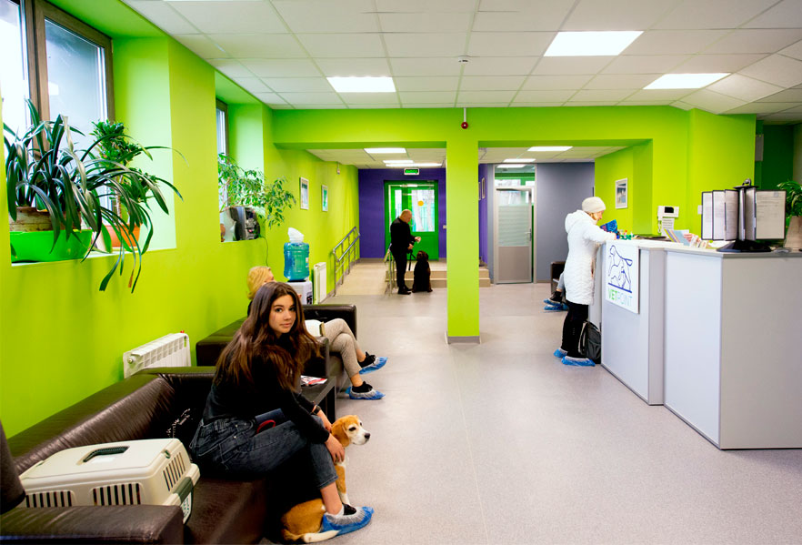
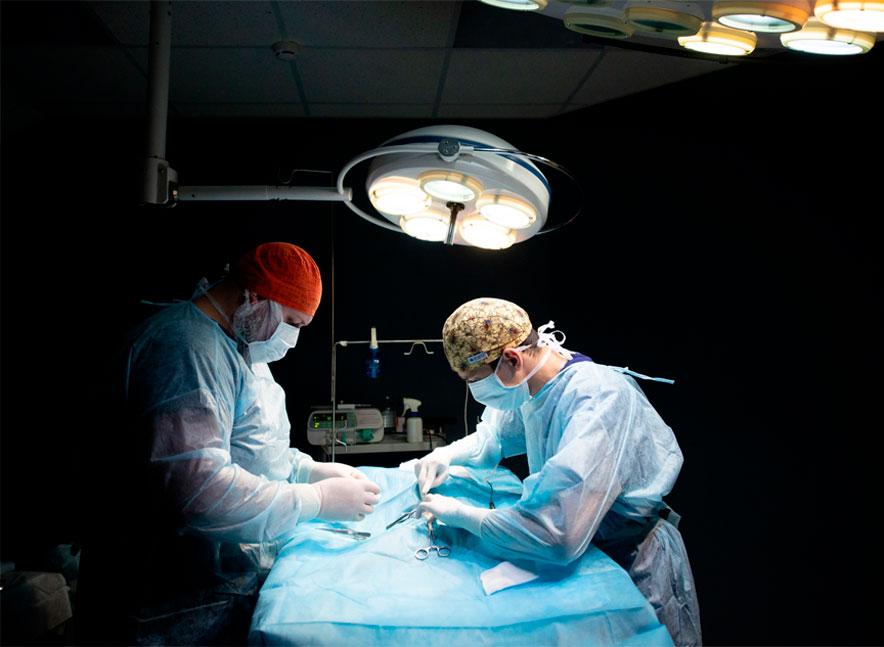
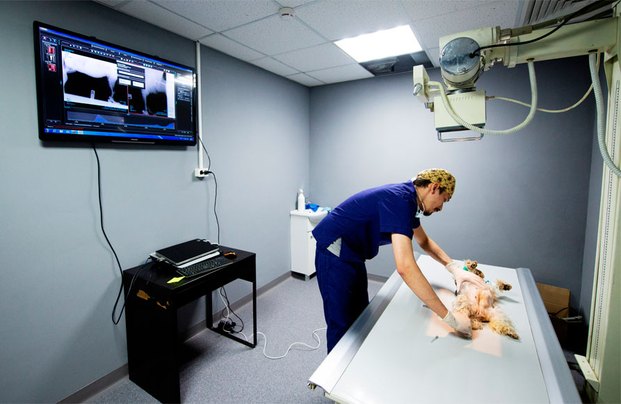
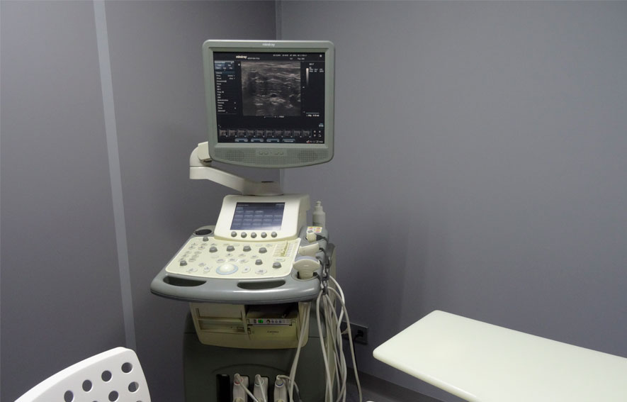
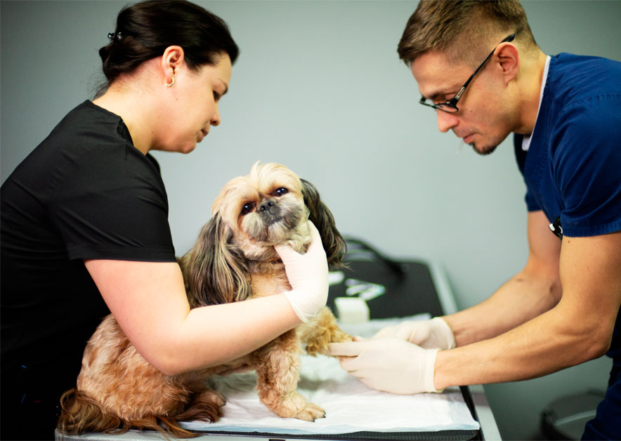
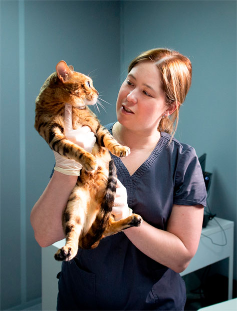

О центре Ветеринарный центр Vet Point начал работу в 2013 году. Он был создан командой практикующих врачей, ставивших своей задачей открыть современную клинику для лечения животных, основанную на принципах гуманной ветеринарной помощи, профессионализме, безграничной любви к животным и, вместе с тем, разумной ценовой политике. За прошедшие годы все сотрудники существенно усовершенствовали свои знания и умения по оказанию помощи животным, что привело к расширению практики.
{kind=link}
Мы рады тому, что нам удалось создать высококлассную ветеринарную клинику, ежегодно помогающую тысячам больных животных выздороветь и вести активный образ жизни вместе с их любящими хозяевами. Доверьте нам заботу о здоровье ваших питомцев! Мы на собственном опыте знаем насколько важна своевременная медицинская помощь для животных и готовы ее оказать днем или ночью.
помощи на основании наших принципов:
-
Честность
Работа врачей клиники нацелена на улучшение здоровья и самочувствия пациентов.
Владелец всегда в курсе реального положения дел и возможных вариантов дальнейших действий, чтобы своевременно принять решение о методе лечении питомца. - Сопереживание У каждого врача и у большинства младших сотрудников есть собственные домашние животные. Многие из них – из числа бывших бездомных пациентов.
- Индивидуальный подход к каждому обратившемуся. Врач на приеме всегда внимательно выслушает владельца, так как именно он является самым близким человеком для питомца, затем наладит контакт с пациентом, чтобы осмотреть и понять причину возникших проблем.
- Эффективность лечения Мы используем исключительно проверенные протоколы, которые доказали свою эффективность и безопасность. Все врачи имеют свыше 10 лет стажа, что позволяет подобрать оптимальные варианты для диагностики и лечения.
- Гуманное обращение Пациенту не причиняют ненужных страданий, у нас нет практики лишних назначений и затягивания процесса диагностики или лечения. Доктора всегда рассказывают о реальном положении дел для принятия решения относительно протокола лечения.
- Активная помощь Мы сотрудничаем с зооволонтерами и центрами защиты животных, чтобы улучшить жизнь как можно большему количеству пациентов.
Новая клиника Vet Point Наш новый центр – это качественно оснащенная клиника с необходимым оборудованием, позволяющим оказывать экстренную хирургическую помощь, принимать пациентов на интенсивную терапию, проводить приемы, вакцинации и другие плановые процедуры. Здесь будет комфортно и вам, и вашим питомцам, так как все кабинеты находятся на одном этаже, они просторны и удобны. Рядом на территории центра есть парковка, которая поможет сберечь драгоценное время при обращении к нам.
{kind=link}
Мы располагаем современным точным оборудованием, предназначенным для использования как в человеческой, так и ветеринарной практике. Аппарат УЗИ Mindray и лицензированная рентген-установка Toshiba с цифровым приемником изображения позволяют проводить высокоточную инструментальную диагностику.
{kind=link}
Автоматический гемоанализатор Mindray дает возможность быстро получить информацию о клинической картине крови пациента. Мы так же работаем с несколькими проверенными лабораториями (Зайцев Плюс, Ветеринарный центр патоморфологии и лабораторной диагностики доктора Митрохиной, Константа), что позволяет нам в кратчайшее время проводить весь спектр лабораторной диагностики.
{kind=link}
Нашей гордостью является инфекционное отделение со стационаром, который оборудован согласно санитарным нормам, исключающим распространение инфекции. Это достигнуто наличием индивидуальной вытяжной вентиляции у каждого бокса, а также использованием персоналом одноразовых средств защиты и гигиены. Боксы стационара оборудованы индивидуальным освещением и подогревом пола с термодатчиком.
Отделение оборудовано просторной ванной, которая подойдет пациенту любого размера. Для пациентов предусмотрен выгул на площадке, расположенной непосредственно на территории центра, что помогает ускорить выздоровление и поддержать нужный уровень активности питомца.
{kind=link}
Как в отделении интенсивной терапии, так и в инфекционном отделении за пациентами ведется круглосуточное наблюдение с периодическим точным контролем их состояния. Наши врачи всегда находятся на связи с владельцем, готовы ответить на все вопросы и рассказать о текущем состоянии их близких питомцев.
{kind=link}
Мы очень ценим оказанное нам доверие, так как знаем как тяжело расстаться с любимым животным на время вынужденного лечения. Именно поэтому с большой ответственностью относимся к своей работе. В центре всегда есть дежурный врач, к которому можно обратиться даже ночью.
{kind=link}
-
Честность
Работа врачей клиники нацелена на улучшение здоровья и самочувствия пациентов.
Владелец всегда в курсе реального положения дел и возможных вариантов дальнейших действий, чтобы своевременно принять решение о методе лечении питомца. - Сопереживание У каждого врача и у большинства младших сотрудников есть собственные домашние животные. Многие из них – из числа бывших бездомных пациентов.
- Индивидуальный подход к каждому обратившемуся. Врач на приеме всегда внимательно выслушает владельца, так как именно он является самым близким человеком для питомца, затем наладит контакт с пациентом, чтобы осмотреть и понять причину возникших проблем.
- Эффективность лечения Мы используем исключительно проверенные протоколы, которые доказали свою эффективность и безопасность. Все врачи имеют свыше 10 лет стажа, что позволяет подобрать оптимальные варианты для диагностики и лечения.
- Гуманное обращение Пациенту не причиняют ненужных страданий, у нас нет практики лишних назначений и затягивания процесса диагностики или лечения. Доктора всегда рассказывают о реальном положении дел для принятия решения относительно протокола лечения.
- Активная помощь Мы сотрудничаем с зооволонтерами и центрами защиты животных, чтобы улучшить жизнь как можно большему количеству пациентов.
Мы понимаем, как тяжело расставаться с любимым животным на время вынужденного лечения. Именно поэтому с большой ответственностью относимся к своей работе. В центре всегда есть дежурный врач, к которому можно обратиться даже ночью.
Нужна помощь или есть вопросы?
Мы круглосуточно на связи!